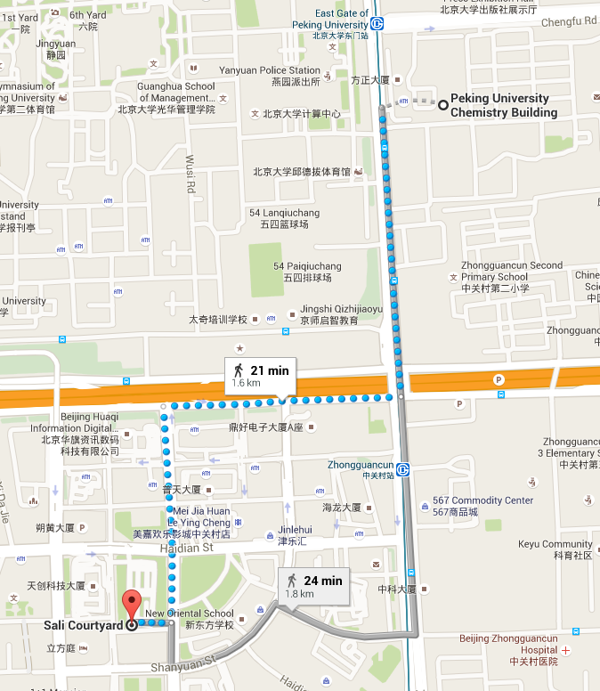

Banquet
The banquet will be arranged at Xihe Yayuan Peking Duck Restaurant (羲和雅苑) on Saturday (June 6) evening.
It takes about 20 minutes to walk from the auditorium to the restaurant directly. You can also take subway from "East Gate of Peking University" station to "Zhongguancun" station and then walk there.
Below is the route from Chemistry Building, Peking University to Xihe Yayuan (Sali Courtyard).

Xihe Yayuan is well received by people in Beijing for its decorated interior and tasty dishes.
The restaurant features roast duck cooked with modern twist of the traditional recipe. Besides, it serves a variety of food from different regions of China.

Dishes of the banquet are as follows.
| Menu of Xihe Yayuan Peking Duck Restaurant | 羲和雅苑烤鸭坊菜单 |
|---|---|
| Mixed Vegetables Salad with XIHE Dressing | 羲和小拌菜 |
| Marinated Beef with Five Spices | 五香小牛肉 |
| Three Layers Curd (Yam, Pumpkin & Purple Sweet Potato) | 地三鲜 |
| Sautéed Broccoli (Clear Sauce) | 清炒西兰花 |
| Stir-fried Papaya with Lily Bulbs | 木瓜鲜百合 |
| Sautéed Lotus Roots with Black Fungus & Snow Beans | 小炒荷塘 |
| "Ma Po" Tofu with Mince Pork & Sea Snails | 蜗牛麻婆豆腐 |
| XIHE Peking Duck with Eight Treasures Box | 羲和烤鸭+八宝盒 |
| Deep-fried Garlic Flavored Pork Spareribs | 羲和蒜香骨 |
| Diced Lamb with Cumin & Coriander | 孜然羊肉 |
| Kung Pao Chicken | 宫保鸡丁 |
| Braised Beef Brisket in Tomato Soup | 番茄牛腩 |
| Sautéed Beef Fillet with Pickled Chili | 野山椒牛柳 |
| Braised Beef Tendon & Sea Cucumber with Scallion | 海参葱烧蹄筋 |
| Sautéed Hair Tail with Vinegar Sauce | 老醋带鱼 |
| Sautéed King Prawns in Oil | 油焖大虾 |
| Sweet & Sour Whole Mandarin Fish | 松鼠桂鱼 |
| Marinated Shredded Trotter in Pot | 老坛手撕猪蹄 |
| Fish Maw Soup with Loofah | 丝瓜鱼肚汤 |
| Sweet Mung Bean Soup | 青麦绿豆沙 |
| XIHE Pork Pancake | 羲和小肉饼 |
| Sweet Sesame Paste Pancake | 芝麻香饼 |
| Assorted Pastries Platter | 宫廷点心拼盘 |
| XIHE Homemade Yoghurt | 羲和自制酸奶 |